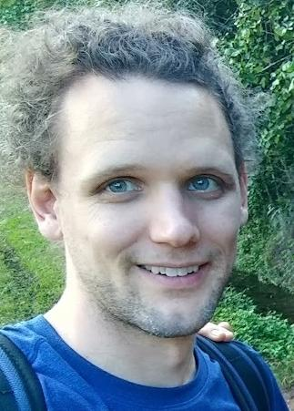

Strategist, Philosopher, Poet, and Performance Artist

Hi! This website is about my interests and experiences. Thanks for being curious!
My general approach to life is to strive for adroitness in mind and body, meticulousness where it matters, and thoughtful consideration as the foundation for all.
My research interests tend to be categorized under theoretical computer science and applied mathematics, in the understanding and optimization of complex systems. I leverage concepts from artificial intelligence, number theory, statistical modeling, algorithmic game theory, cognitive psychology, and other related fields. Check out the section, or just drop me a note if you have an interesting problem to consider!
I earned a Ph.D. and M.S. in computer science at CU Boulder advised by Mike Mozer. Prior to that, I worked for many years as a research mathematician for the government. I give minimal details of that work in public venues due to its sensitivity, although you can try reaching out to me for additional info. As an undergraduate, I majored in Math, Physics and Theater with a minor in Creative Writing. I was the first triple major at Earlham College, and still the only one to finish in four years, to my knowledge.
Following the tradition of liberal arts, I have also practiced many forms of movement and lyricism. The section mentions a few of these endeavors. If you have a project needing a practitioner or director/choreographer while I'm in the greater Denver area, I'm happy to chat.
I especially love the infinite combo of being inspired by and inspiring others. I list some formal pursuits thereof in a section.
Name Spelling
Elliott-Williams is all one long hyphenated last name.
I will point out that my Elliott has two ts. This is significant for my family, since my grandmother was a one-t Elliot before marrying into the two-t Elliott line from across the river.
Contact Info
Email: e.w.[first name]@gmail.com
Please avoid referencing my name or other personal attributes in the context of any aliases that I may use.
Research
My research interests tend to be categorized under theoretical computer science and applied mathematics, in the understanding and optimization of complex systems. I only provide minimal details in public-facing venues of sensitive government work, although you can try reaching out to me for additional info.
Funded Research
Nanobelt Fabrication for Gas Sensing. As summer research at Earlham College, we sought to duplicate recent new nanobelt fabrication methods. I got to use a scanning electron microscope, spectrometer, gold sputtering device, and the fabrication cooker. With Zack Ferraro and Andrew Cleland, I presented a poster at an undergraduate research conference in 2006.
Optimization of Matrix Equivalence. In my first office tour for the U.S. government, I worked on (average-case) efficient methods for calculating matrix equivalence under permutation of rows and columns. My methods improved bottleneck run-time by several orders of magnitude, and I received a Group Cash Award (2008) for an "inordinate amount of coordination and interaction with others... he pioneered the development of math-based algorithms." My classified peer-reviewed paper "Efficient Calculation of Matrix Equivalence under Permutation of Rows and Columns," was accepted for office publication in 2008.
Parallelized HPC Algorithms. This work was during my second office tour for the U.S. government. I authored a peer-reviewed paper published in office, May 2009. I received an Individual Time-Off Award (2011) for "significant technical work...key in finding a solution."
Information Assurance Cryptographic Analysis. This work was during my third office tour for the U.S. government. I authored a peer-reviewed paper on novel analysis methods published in Vulnerability Analysis and Operations Technical Reports, April 2010.
Correlating Spatiotemporal Events. In my fourth office tour for the U.S. government, I worked on improving statistical methods to correlate spatiotemporal events along with concept representations. I received an Individual Time-Off Award (2012) for this work in conjunction with neocortex modeling efforts (next paragraph), "significantly influencing the direction taken by future research." With one co-author (name protected), we authored a note accepted for office publication, March 2010. With two co-authors (names protected), I authored a paper on model-based approaches to correlating stochastic processes in 2010. I presented "Model-Based Temporal Correlation," at the international Information Processing Conference poster session, October 2010, as well as at math and statistical methods seminars in November and December of that year.
Neuromimetic Image Processing. In my fifth office tour for the U.S. government, I worked on neuroscience-inspired image processing algorithms. I received an Individual Time-Off Award (2012) for this work in conjunction with correlating event sequences (previous paragraph), "significantly influencing the direction taken by future research." I authored a paper on the evaluation and improvement of a proprietary commercial method, October 2012.
Signals Intelligence Cryptographic Analysis. I was selected for a multidisciplinary team collaboration for a priority project with the U.S. government. I received an Individual Time-Off Award for "thorough" and "excellent" contributions and "persistence." I was a co-author (with team) on a peer-reviewed paper published in Technical Notes, October 2013.
Summer Conference of Applied Mathematical Problems. I was selected for a summer conference in which I worked on classified HPC algorithms. I authored two peer-reviewed technical papers on algorithm evaluation methods and algorithm design improvements, November and December 2013. I delivered a talk at the Cryptanalytic Research and Diagnosis Conference, March 2014.
Intertemporal Choice Modeling. I was involved in developing computational models of decision making to determine personalized interventions that allow an individual to better overcome immediate reward temptation and improve long-term goal outcomes. We used the models to determine a limited schedule of incentives that maximizes expected outcomes and improves individual decision making. I contibuted critical ideas of incentive limitations as well as approximation methods to make modelling computationally tractable, coded the models, and helped run human experiments. This work appears in Sukumar, Ward, Elliott-Williams, Hakimi, & Mozer (2022).
Active Selection Bayesian Optimization. As a Research Assistant working with Mike Mozer at University of Colorado Boulder, I improved and expanded a Bayesian optimization tool for active selection, Spearmint (Snoek, Larochelle, & Adams, 2012). The main novelty that I added was a pairwise preference observation model. Pairwise assesment requires an additional level of abstraction because the observations are determined based on the combination of two latent qualites estimated by a Gaussian process model, which means that estimation is more susceptible to observation noise. The purpose was to create a black-box tool available for forced-choice psychology experiments.
Face Detection and Localization. I researched classic and neural net machine learning methods for smart phone and banking facial recognition products as a summer research intern with Sensory, Inc. My work required coordination with teammates working on downstream identity matching. Our product shipped in all phones of a major manufacturor starting in 2017.
Facilitating Human Perception via Task-Specific Image Modulations For my PhD with Mike Mozer at University of Colorado Boulder, I developed general deep neural net image-to-image transformation methods to support people in better performing ordinary visual decision and reasoning tasks. The goal was to manipulate images to allow people to use their existing natural perceptual capabilities, minimizing learning required by the user and contention between human and machine. Because human-in-the-loop training would be costly, our transformations are trained to improve neural net surrogates on task, along with select auxiliary losses. We considered three support use cases for machine input relative to existing perceptual capabilities: typical vision, degraded vision, and augmented vision. I designed and conducted six human perceptual studies to demonstrate a significant increase in discrimination accuracy with learned transforms across a range of tasks for degraded vision. Additional simulations showed promise for these methods to also support people who have typical vision, and even to incorporate information beyond typical human sensing ability without retraining users. Preparations for publication are ongoing.
Additional Projects
Mathematical Derivation of Expected Difference. As a senior math major, I derived the general equation for the expected difference between two random natural numbers up to size N. I presented this to my Senior Seminar class, Fall 2006.
Biparental Reproduction Systems. After being exposed to evolutionary optimization algorithms, I researched different hypothetical systems of biparental reproduction. I developed formal measures of desired properties including pairwise viability, inbreeding safeguards, and robustness to and recovery from decimation events. I discovered new systems with superior properties which are unlikely to naturally develop through gradual processes (optimization space is not convex on vertex and edge edits). I presented these ideas at a work seminar, June 2011.
Collaborative Network Production. I became interested in how to optimize the sharing of non-rivalrous production (such as knowledge production) among multiple actors when limiting the number of sharing channels. The practice of "continuous communication" in Agile Development (a ubiquitous Systems Engineering approach) presents challenges when scaling the number of stakeholders, including information overload and anlysis paralysis. Product innovation is also a concern, which I postulate to be harder without some amount of isolation. I designed a simulation platform and established the superiority of certain constrained network configurations under a variety of production models. I presented some of this work as a final project for a Network Analysis and Modeling graduate course, December 2016.
Emergent Colony Behavior. I proposed an alternative model for resource retrieval by simulated (ant-inspired) colonies of actors with limited capabilities of perception and environment modification (scalar hormone scent). Through simulations, I demonstrated clear cases of improved emergent behavior (resource retrieval efficiency). I presented this work as a final project for a Multi-Agent Systems graduate course, May 2018.
Pairwise Ranking. I developed a conceptual model that results in a ranking algorithm based on pairwise comparisons that is similar to SpringRank (De Bacco, Larremore, & Moore, 2018). My model better generalizes to scalar preference signals in a way that preference variance can be interpreted and factored into ranking. I intend to match my evaluation platform to what was used for SpringRank for performance comparisons in preparation for publication.
Tournament Designs. Tournament designs can be viewed as a more constrained form of pairwise ranking, where the options being ranked may only be able to engage in one pairwise assessment within particular time windows. This prompts compact parallel scheduling of multiple options to avoid long delays. The efficacy of different tournament designs has only been scrutinized on a scientific basis quite recently. For example, Sziklai, Biró, & Csató (2022) suggest that the ubiquitous 1895 Swiss design has advantages over other simple designs, although more modern Swiss variants are not considered in that work. I have formulated novel designs that I've proven improve over Swiss across a wide variety of performance measures and option environments. This research is ongoing, with an intent to publish.
Teaching & Community
Teaching Assistant, CU Boulder Department of Computer Science
Algorithms undergraduate course (Fall 2020, Spring 2021, Fall 2021). Designed and instructed weekly recitations; designed and graded homework and quizzes; reviwed exam designs and graded student submissions; mentored students; fielded questions during main lectures, office hours, and asynchronous online platform.
Neural Nets and Deep Learning graduate course (Spring 2020). Collaborated on homework design; mentored students; fielded questions during main lectures, office hours, and asynchronous online platform; designed and presented one lecture.
High Performance Scientific Computing graduate course (Fall 2019). Designed and instructed weekly labs.
Class Lead, Eastern Cooperative Recreation School
Strategic Storytelling Card Game (Summer 2021). Designed and led workshop.
Workshop and Conference Contributions
Volunteer, Conference on Economics & Computation, Boulder CO (2022)
Volunteer, Conference on Neural Information Processing Systems, Montreal Canada (2018)
Presenter, Cryptanalytic Research and Diagnosis Conference (2014)
Participant, Summer Conference on Applied Mathematical Problems, Princeton NJ (2013)
Poster Presenter, Information Processing Conference (2010)
Participant, Inter-Agency Workshop on HPC Resilience at Extreme Scale, Catonsville MD (2012)
Participant, Department of Defense Satisfiability Workshop, Linthicum MD (2008)
Peer Mentor
University of Colorado Boulder, Graduate Mentor (2017, 2019, 2020)
Earlham College, Math Tutor (2004-2005)
Gould Academy, Math Tutor (2002-2003; co-founded program)
Teaching Assistant, National Cryptologic School
Information Security Mathematics (Spring 2012, Spring 2013); mentored students, fielded questions, designed and presented one lecture
Council Member, Crypto-Mathematics Institute (elected 2013-2014, representative 2009-2011)
MathNet Co-leader, work-based new hire welcoming (2010-2011, Member 2009-2010); received a Star Award "in recognition of your service" to the community
Graduation Biography Reader (2010), selected by preceding work-program cohort for significance to their cohort
I've made a few other contributions to various game communities under an alias. Check out https://theo-donly.github.io/ (not yet fully populated)
Avocations
I (luckily) learned early how to be a good learner to support my many interests. Here I list some of those intersts.
Movement
Gymnastics -- trained and competed in USA Men's Gymnastics with Rodney Gendron at Andy Valley Olympic School of Gymnastics up to what was then Level 4 (the first optional level).
Dance -- various classical and modern forms, including classes at Earlham College and Eastern Cooperative Recreation School, primarily folk and contemporary along with some exposure to tap, break, and capoeira.
Parkour -- trained with Travis Graves at Primal Fitness, including two advanced classes.
Juggling -- required to leave the National Mall because my practice was drawing too big of a crowd, hah!
Physical eloquence from the work of Tony Montanaro.
I began skateboarding at age 37 to keep up with my kids! I'd love to try to get into surfing, but it's a bit of a challenge in Colorado.
Music
Tenor in a singing group with Raf, John, and Josh, named The Cult of Poseidon for repertoire of English and Irish sea songs, along with 14th century madrigals.
Tenor of Earlham College Madrigal Singers (and Concert Choir) for four years, with dozens of performances.
Trained in classical and jazz piano for 10 years.
Theatrics
"Guys and Dolls" (Sky Masterson), Earlham College
"Act Without Words II" (director) directing class at Earlham College
"The Miser" (Jacques), Earlham College
"The Bald Soprano" (Mr. Smith), directing class at Earlham College
"Professor George" (Grazzio), Earlham College
"A Day in Hollywood, A Night in the Ukraine" (Fred Astaire, company)
"Triangle Shirtwaist Factory" (Reporter), Earlham College
"The Other Five Percent" (Hughie), directing class at Earlham College
"The Foreigner" (Charlie), high school
"Carousel" (Billy Bigalow), high school
Strategy Games
I've explored (and designed) various strategy games over the years. Here I list a few, or you can check out my public gaming alias at https://theo-donly.github.io/
Middle Earth Collectable Card Game, respected rules ranger, winner of multiple international tournaments, developed cooperative variant and sealed pack generation web app
Dungeons & Dragons / Pathfinder, developed a menu-based approach to ability score generation to better achieve the fairness of the point buy system while capturing the correlations within a character's set of ability scores
Magic: The Gathering, hosted tournaments in college
World of Warcraft, theorycrafter for top guild dps and healing into Cataclysm
RoboWar (autonomous robot battler), Most Innovative and 2nd place overall awards in international tournament
Notable games I've made include Dance Breakoff (breakdancing card game), and "The Game" (with Mat Stork, first grade recess, inclusive strategy game they were still playing when I drove past 20 years later!)